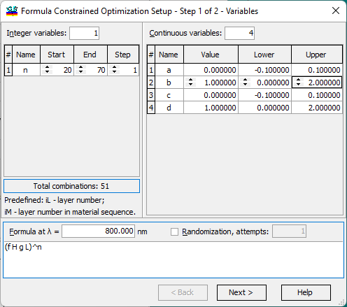

Formula Constrained Optimization - Variables
Formula Constrained Optimization - Variables
Independent variables are specified in the first step of the Formula Constrained Optimization Setup dialog.

The total number of combinations is displayed below for reference. It should not be too large, as exhaustive search may take too long.
iL: Represents the current layer number and is computed automatically. Numbering starts with the value 1.
iM: Represents the current layer number in the sequence of the same material. Numbering starts with the value 1.
Independent Continuous variables are specified in the right pane of this dialog. It is necessary to set the number of continuous variables, provide a unique name for each variable, and set the value, lower, and upper limits.
Below, it is necessary to specify the Control Wavelength for the formula (default value is equal to the Reference Wavelength in General Configuration dialog) and the Formula itself.
The “Randomization, attempts” option allows adding a randomization multi-start procedure at each integer iteration of the Formula Constrained Optimization. When this option is active, you can specify the number of multi-start refinement steps. After clicking the Next button, the Formula Constrained Optimization - Formula step of the Formula Constrained Optimization Setup dialog will open.